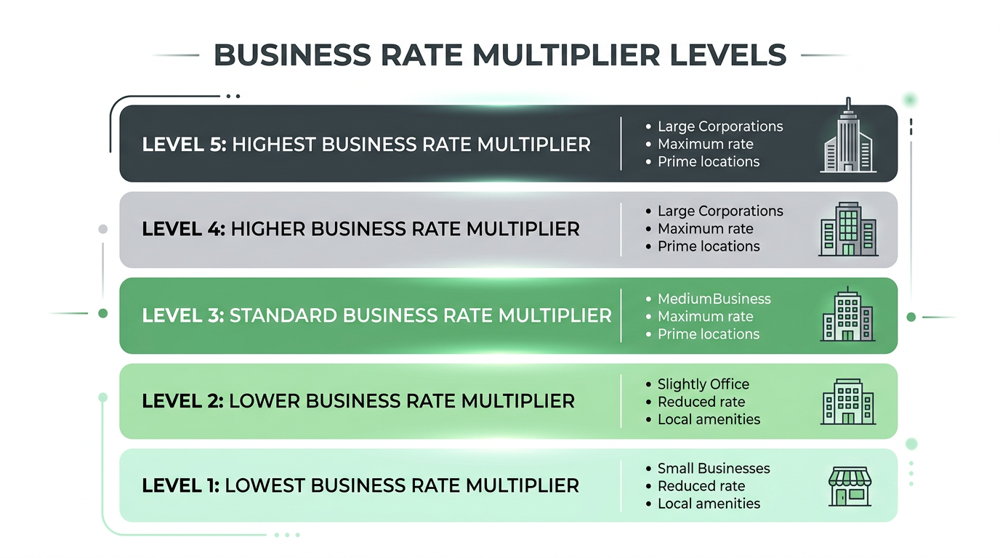

Twenty days. That is all that separates the current business rates system from its most fundamental transformation in a decade. On 1 April 2026, three seismic changes collide simultaneously: a national revaluation based on April 2024 rental evidence, a new five-tier multiplier structure replacing the old two-tier system, and the expiry of temporary Retail, Hospitality and Leisure (RHL) relief. The Spring Statement on 26 March confirmed that every element is on track — no delays, no last-minute reprieves.
This article is your definitive countdown guide. We set out exactly what changes on 1 April, what the confirmed multiplier rates are, which reliefs you might qualify for, and the critical actions you must complete before March 31. Whether you own a single shop or manage a national portfolio, use this as your checklist for the transition.
What the Spring Statement Confirmed
The March 2026 Spring Statement was described by BNP Paribas Real Estate as “muted” and “low-key” for the property sector — but that is precisely the point. No fresh rating measures were announced because the government considers the April reforms comprehensive enough. The Spring Statement confirmed:
- All business rates changes scheduled for 1 April 2026 remain on track
- No additional reliefs or extensions beyond those already announced
- The £4.3 billion support package stands as committed
- Investment volumes for UK commercial real estate forecast at £56 billion for 2026, suggesting market confidence despite the transition
For businesses hoping for a last-minute extension of the 40% temporary RHL relief — as happened repeatedly during the pandemic years — the Spring Statement closed that door definitively. From 1 April, the temporary relief is gone, replaced by a structurally different (and less generous for some) permanent system.
The New Five-Tier Multiplier System
From 1 April, the familiar two-tier system (standard and small business multipliers) is replaced by five distinct multipliers. The government confirmed the exact rates in February 2026:

The confirmed multipliers for 2026/27
- Small Business RHL: 38.2p — For retail, hospitality and leisure properties with rateable values below £51,000. The lowest tier, offering a 5p discount against the equivalent non-RHL rate
- Standard RHL: 43.0p — For RHL properties with rateable values between £51,000 and £499,999. A 5p discount against the standard non-RHL rate
- Small Business Non-RHL: 43.2p — For all other properties below £51,000 RV. Replaces the previous small business multiplier
- Standard Non-RHL: 48.0p — For non-RHL properties between £51,000 and £499,999 RV. Replaces the previous standard multiplier
- High-Value: 50.8p — For all properties with rateable values of £500,000 or above, regardless of sector. A 2.8p premium above the standard rate, designed to help fund the RHL reliefs
What this means in practice: A high-street shop with a £40,000 RV moves from the temporary 40% RHL relief (effective rate ~28.8p) to the permanent Small Business RHL rate of 38.2p. That’s a significant increase — from roughly £11,520 to £15,280 per year — despite the “permanently lower” multiplier. The new system is better than no relief, but less generous than the temporary pandemic-era support.
Qualifying for RHL multipliers
To benefit from the lower RHL rates, a property must be occupied and used wholly or mainly for qualifying retail, hospitality, or leisure purposes. This includes shops, restaurants, cafes, drinking establishments, cinemas, live music venues, hotels, and similar consumer-facing businesses. Crucially, unlike previous RHL schemes, there is no cash cap — every qualifying property benefits, including all shops in a chain.
The Relief Landscape from April 2026
Alongside the new multipliers, several relief schemes change or launch:
What’s ending
- 40% Temporary RHL Relief: Expires 31 March 2026. Not being renewed. Replaced by the permanent lower RHL multipliers
What’s new
- Pub and Live Music Venues Relief: 15% additional relief for qualifying pubs and live music venues, applied on top of other reliefs
- Supporting Small Business Scheme: Bill increases capped at £800 per year or the transitional relief cap (whichever is more favourable) for small businesses losing existing relief
- Extended Small Business Rates Relief Grace Period: Increased from 1 year to 3 years — businesses that grow beyond the small business threshold get three years before the higher rate kicks in
What’s continuing
- Transitional Relief: £3.2 billion scheme phasing in increases over multiple years. Available to ratepayers facing large bill increases from the revaluation. Downward adjustments apply immediately
- Small Business Rate Relief: Continues with the same thresholds (100% relief below £12,000 RV; tapered between £12,001 and £15,000)
- Empty Property Relief: Three-month initial relief period for most properties, six months for industrial. The 13-week reset rule (from April 2024) continues
Impact on Vacant Property Owners
For owners of empty commercial properties, the April reset creates a perfect storm of increased exposure:
- Higher rateable values from the revaluation mean higher empty rates liability
- The 13-week rule (established April 2024) means you need genuine occupation for a full quarter to reset your relief period
- Tightening enforcement means councils and the VOA are more actively scrutinising occupation claims
- The proposed Vacant Properties Bill signals that further intervention may be on the horizon
Against this backdrop, the case for proactive, compliant beneficial occupation has never been stronger. VacatAd’s technology-driven model — establishing genuine occupation through digital infrastructure that delivers free public Wi-Fi and local advertising — satisfies the legal test for beneficial occupation while generating measurable community value. It’s designed specifically for the post-2024 regulatory environment, where artificial or nominal occupation is being actively challenged.
Your 20-Day Countdown Checklist
Here is what you should be doing right now, before 1 April:
Immediate (This Week)
- Check your draft 2026 rateable value at gov.uk/find-business-rates. Compare it to your current value and to comparable properties
- Identify any factual errors in the VOA's assumptions (floor areas, layout, use classification). Report these before March 31 — after this date, they cannot be corrected retrospectively
- Raise any outstanding check cases through your business rates valuation account
Within 7 Days
- Calculate your estimated 2026/27 bill using the confirmed multipliers above
- Check eligibility for reliefs: RHL multipliers, Pub & Live Music Venues Relief, Supporting Small Business scheme, transitional relief
- Review your budget. Adjust property cost projections for 2026/27 based on the new values and rates
Within 14 Days
- Review your void strategy. For any vacant properties, assess whether the increased rates liability justifies proactive action
- Engage with VacatAd or another compliant beneficial occupation provider if your vacant property costs are escalating. We can typically deploy within 2–3 weeks
- Appoint a rating advisor if you believe your new rateable value is materially incorrect and you plan to challenge it after April 1
By March 31
- Finalise all current-list challenges. 31 March is an absolute deadline for correcting errors on the current rating list
- Claim any historic refunds you’re entitled to — they cannot be claimed after the list changes
- Confirm your business rates billing authority contact — ensure your billing details are correct for the new bills arriving in April
What Comes After April
The April reset is not the end of the story. The government's “Transforming Business Rates” initiative, which received over 250 stakeholder contributions and 140 written submissions, outlined further reforms to be phased in through 2026–2029:
- Annual returns: New duty-to-notify requirements may require ratepayers to submit annual information to the VOA
- Anti-avoidance measures: A General Anti-Avoidance Rule (GAAR) for business rates is under active consideration
- Progressive banding: A potential move from the current threshold-based system to a “slab” or “slice” structure with more granular rate tiers
- Improvement Relief review: Reforms to ensure property improvements don’t immediately trigger higher valuations
The next three years will see the business rates system continue to evolve. The businesses that treat April 2026 as the beginning of a new era — rather than a one-off adjustment — will be best positioned to navigate what comes next.
The Bottom Line
1 April 2026 marks the convergence of a national revaluation, a new tax structure, and the end of temporary pandemic-era support. For most commercial property owners, bills will change — some significantly. For those with vacant properties, the financial pressure is intensifying at the same time as enforcement and legislative scrutiny are tightening.
The landlords who will fare best are those who have prepared: who have checked their valuations, understood the new multiplier system, claimed every relief they’re entitled to, and taken proactive action on their void properties.
If you’re looking at increased void costs from April and want to understand how VacatAd’s compliant beneficial occupation model can reduce your exposure, there’s still time to act. Contact our team today — we can typically deploy our solution within 2–3 weeks, meaning installations started now will be in place before the new rates take effect.
The clock is ticking. Make the most of the time you have.